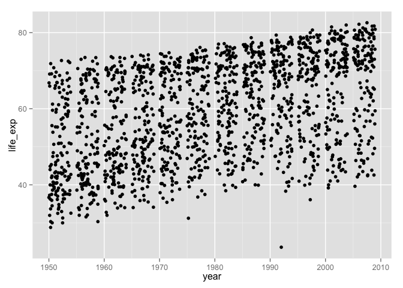
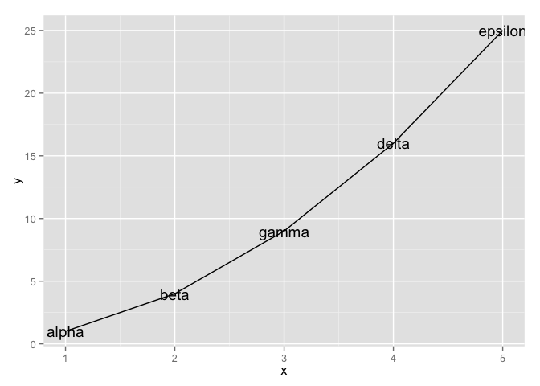
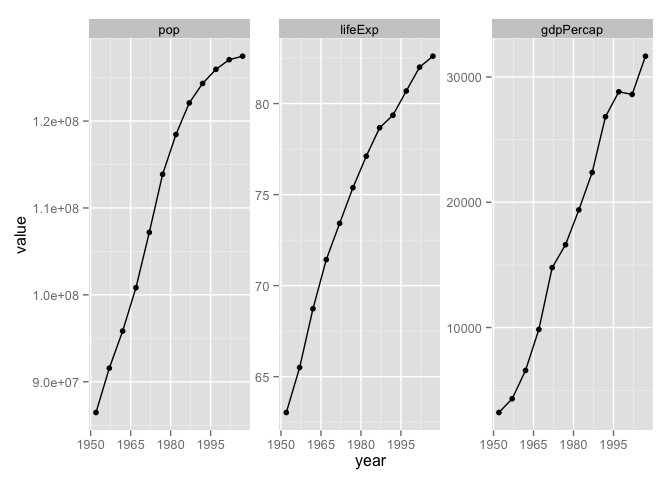

Secrets of a happy graphing life
Keep stuff in data.frames
I see a fair amount of student code where variables are copied out of a data.frame, to exist as stand-alone objects in the workspace.
gDat <- read.delim("gapminderDataFiveYear.tsv")
life_exp <- gDat$lifeExp
year <- gDat$yearProblem is, ggplot2 has an incredibly strong preference for variables in data.frames; it is virtually a requirement for the main data.frame underpinning a plot.
library(ggplot2)
ggplot(aes(x = year, y = life_exp)) + geom_jitter()## Error: ggplot2 doesn't know how to deal with data of class unevalWhy not just leave the variables in place and pass the hosting data.frame to the data = argument?
ggplot(data = gDat, aes(x = year, y = life_exp)) + geom_jitter()
What if we wanted to filter the data by country, continent, or year? This is much easier to do safely if all affected variables live together in a data.frame, not as individual objects that can get “out of sync.”
Don’t write-off ggplot2 as a highly opinionated outlier! In fact, keeping data in data.frames and computing and visualizing it in situ are widely regarded as best practices. The option to pass a data frame via data = is a common feature of many high-use R functions, e.g. lm(), aggregate(), plot(), and t.test(), so make this your default modus operandi.
Explicit data.frame creation via dplyr::data_frame()
If your data is already lying around and it’s not in a data.frame, ask yourself “why not?”. Did you create those variables? Maybe you should have created them in a data.frame in the first place! The new data_frame() function in dplyr is an improved version of the built-in data.frame(), which makes it possible to define one variable in terms of another and that won’t mangle your imports via coercion. This removes my most common excuses for data.frame procrastination and avoidance.
suppressPackageStartupMessages(library(dplyr))
my_dat <-
data_frame(x = 1:5,
y = x ^ 2,
text = c("alpha", "beta", "gamma", "delta", "epsilon"))
ggplot(my_dat, aes(x, y)) + geom_line() + geom_text(aes(label = text))
Together with dplyr::mutate(), which adds new variables to a data.frame, this gives you the tools to work within data.frames whenever you’re handling related variables of the same length.
Tidying and reshaping
This is an entire topic – multiple topics, in fact – covered elsewhere.
See the lesson contributed to Data Carpentry for info on tidy data.
There’s a block under development on other reshaping tasks.
Factor management
This is an entire topic, covered elsewhere.
See Be the boss of your factors to learn how to take charge of factor levels and their order and for how to map old levels into new ones. You’ll also see demos of the downstream pay-offs, e.g. more effective figures.
Worked example
Inspired by this question from a student when we first started using ggplot2: How can I focus in on country, Japan for example, and plot all the quantitative variables against year?
Your first instinct might be to filter the Gapminder data for Japan and then loop over the variables, creating separate plots which need to be glued together. And, indeed, this can be done. But in my opinion, the data reshaping route is more “R native” given our current ecosystem, than the loop way.
Reshape your data
We filter the Gapminder data and keep only Japan. Then we gather up the variables pop, lifeExp, and gdpPercap into a single value variable, with a companion variable key.
library(tidyr)
japan_dat <- gDat %>%
filter(country == "Japan")
japan_tidy <- japan_dat %>%
gather(key = var, value = value, pop, lifeExp, gdpPercap)
dim(japan_dat)## [1] 12 6dim(japan_tidy)## [1] 36 5The filtered japan_dat has 12 rows. Since we are gathering or stacking three variables in japan_tidy, it makes sense to see three times as many rows, namely 36 in the reshaped result.
Iterate over the variables via facetting
Now that we have the data we need in a tidy data.frame, with a proper factor representing the variables we want to “iterate” over, we just have to facet.
p <- ggplot(japan_tidy, aes(x = year, y = value)) +
facet_wrap(~ var, scales="free_y")
p + geom_point() + geom_line() +
scale_x_continuous(breaks = seq(1950, 2011, 15))
Recap
Here’s the minimal code to produce our Japan example.
japan_tidy <- gDat %>%
filter(country == "Japan") %>%
gather(key = var, value = value, pop, lifeExp, gdpPercap)
ggplot(japan_tidy, aes(x = year, y = value)) +
facet_wrap(~ var, scales="free_y") +
geom_point() + geom_line() +
scale_x_continuous(breaks = seq(1950, 2011, 15))This snippet demonstrates the payoffs from the rules we laid out at the start:
- We isolate the Japan data into its own data.frame.
- We reshape the data. It’s a classic case of tidying. We gather three columns into one, because we want to depict them via position along the y-axis in the plot.
- We use a factor to distinguish the observations that belong in each mini-plot, which then becomes a simple application of facetting.